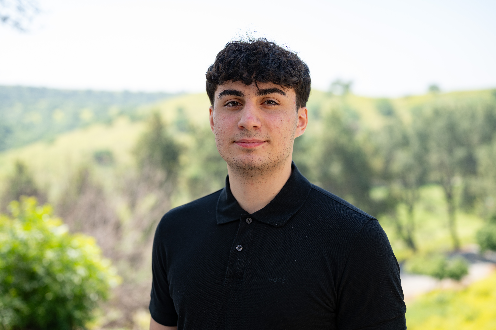
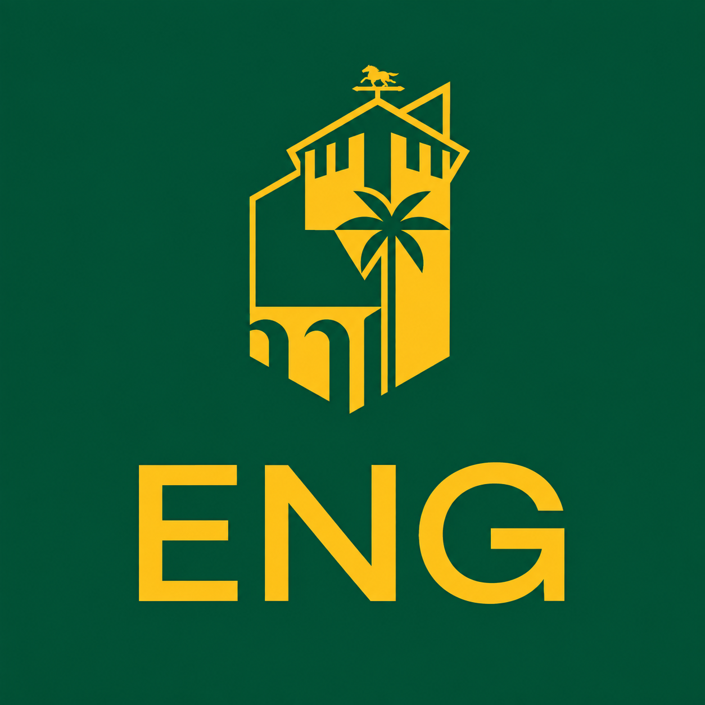
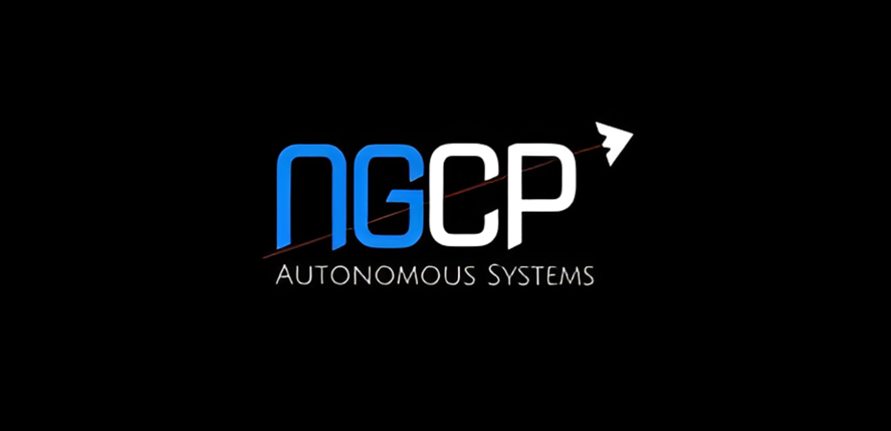
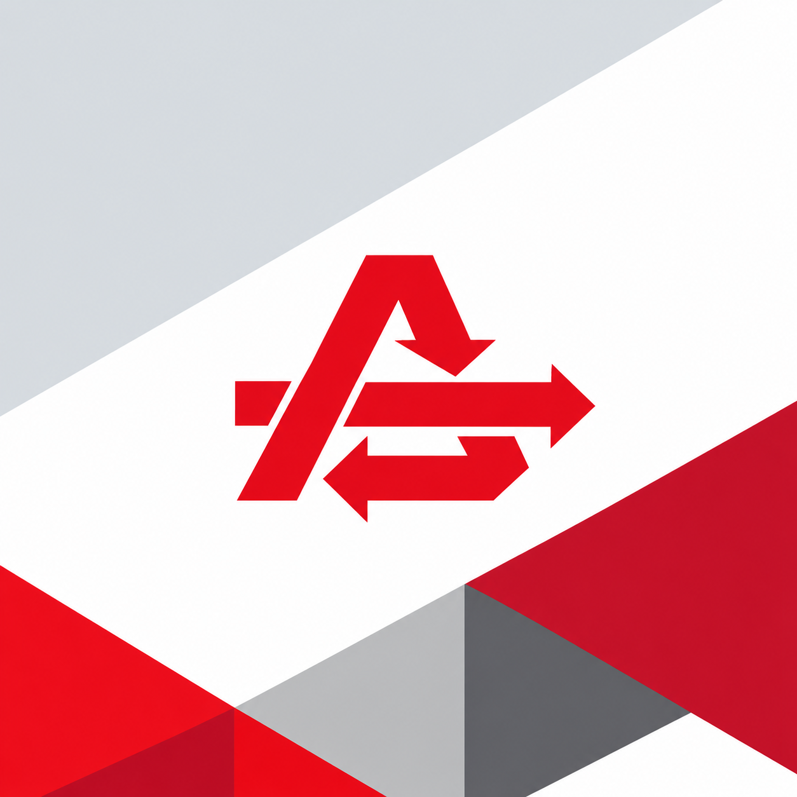
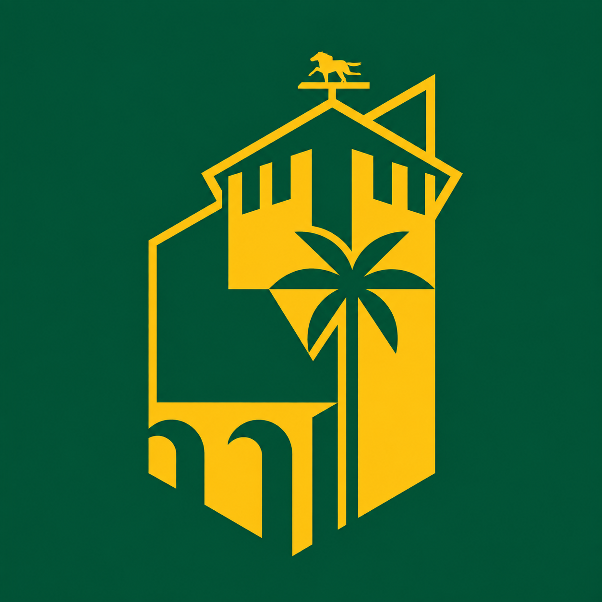
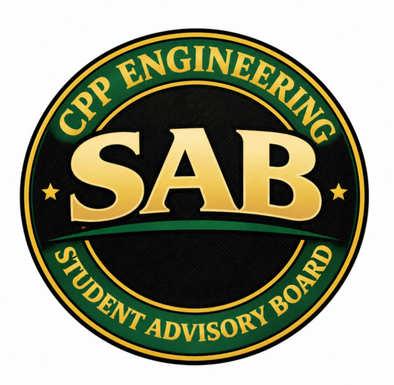
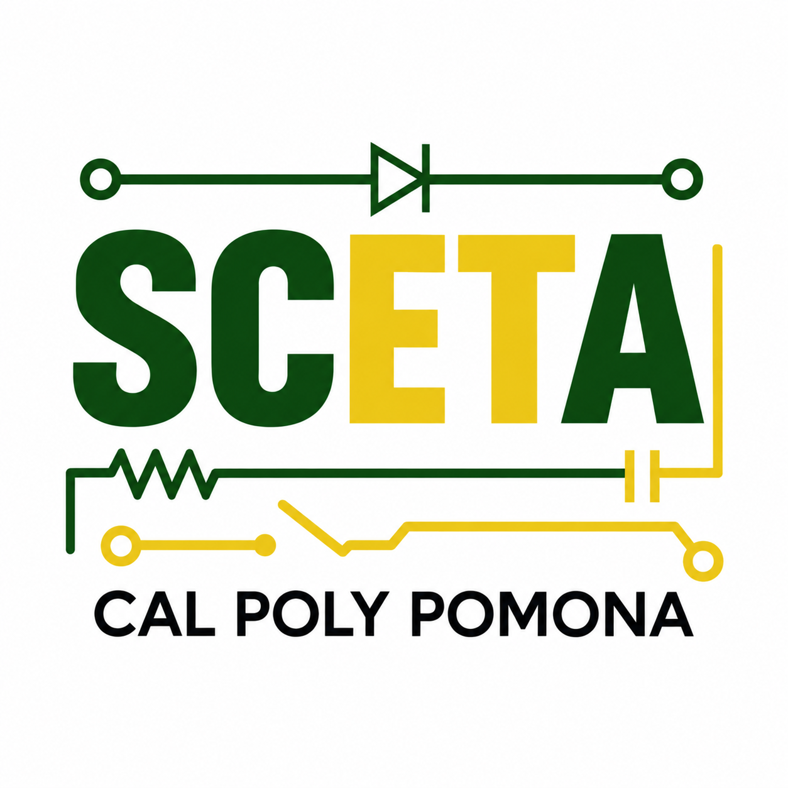
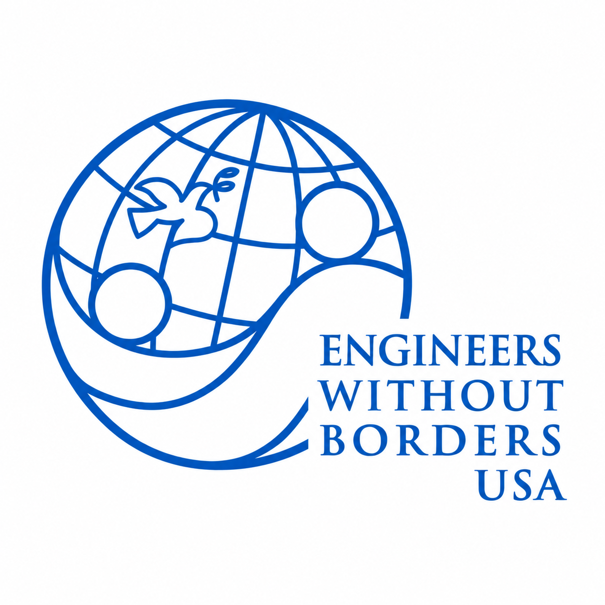

Open to engineering internships
Computer Engineering · Pomona, California
David
Boyadjian.
I build where hardware, intelligence, and data meet.
Computer Engineering student, undergraduate researcher, and embedded firmware developer creating intelligent systems across hardware, AI, and data.

STM32
Firmware + control
LLM / RAG
Digital engineering
(a) About
Engineering the physical and digital together.
I’m pursuing a B.S. in Computer Engineering with two minors—Data Science and Statistics—building range across firmware, circuits, machine learning, statistical modeling, databases, and digital engineering.
I’m most energized by systems that turn advanced technology into real-world impact: autonomous platforms, local AI, predictive models, and reliable embedded intelligence.
Build hands-on
Think across disciplines
Design for real users
(b) Flagship
01
Active build
Northrop Grumman UGV Firmware
Contributing modular STM32 control for an autonomous emergency-response vehicle using PWM output, GPIO direction logic, and reusable motor and servo interfaces—while coordinating firmware, autonomy, and integration teams.
(c) Platform
02
Deployed
Engineering Event Management System
Designed and deployed a full-stack dashboard for event tracking, multi-select audiences, advanced filters, CSV exports, logistics planning, and real-time CRUD operations.
(d) Web
03
Live
Personal Portfolio
A responsive, accessible website designed to communicate my work across computer engineering, research, software, and data.
(e) Experience
Research, technical, and professional experience.
May 2026–Present

Undergraduate Research — Digital Systems Engineering
Exploration and Space Technologies · Digital Engineering Lab
Helping launch applied research across AI, CAD, 3D scanning, and additive manufacturing while preparing a local LLM and RAG workflow on Apple Silicon with MLX-LM.
Aug 2026–Present

Northrop Grumman Collaboration Project
Unmanned Ground Vehicle · Firmware Subteam
Developing STM32 embedded firmware and serving as liaison between firmware, autonomy, and integration subteams.
Jun–Aug 2025

Data Analyst Intern
Arakelian Enterprises Inc. · Athens Services
Queried, joined, cleaned, and validated 30,000+ records with SSMS; improved Salesforce and AppSheet workflows and supported Tableau reporting.
(g) Education
2025—2029
California State Polytechnic University, Pomona
B.S. Computer Engineering · GPA 3.76
Minors in Data Science and Statistics · Expected May 2029
Relevant coursework
(h) Honors
Recognition
Alpha Lambda Delta
Honor Society · 2026
National Honor Society
Member · 2025
(i) Leadership
Contributing beyond the classroom.
01

Dean’s Student Advisory Board
Board Member · Aug 2025–Present
Representing engineering students in conversations with college leadership.
02

Southern California Engineering Technology Association
Executive Board Treasurer · Aug 2026–Present
Supporting the CPP chapter through financial stewardship and executive-board collaboration.
03

Engineers Without Borders
Executive Board Treasurer · Aug 2025–May 2026
Managed $5,000+ across university and donation accounts and partnered on service initiatives.

(j) Contact
Let’s build something that matters.
I’m open to internships, research collaborations, and engineering projects involving machine learning, predictive modeling, digital engineering, and AI-enabled embedded systems.